SOLIDWORKS-入门
1简介
SOLIDWORKS是一款基于特征参数实体建模的工具
特征：组成零件的基本单元；
参数：具有数值和几何关系的约束；
设计意图
- 尺寸标注示例
- 特征创建示例
软件欢迎界面
主页
最近
最近打开
学习
2025后“快速导览”会添加关于3DExperience相关的文章，不过必须连接到3DExperience角色才能使用（WDX，UES都行）
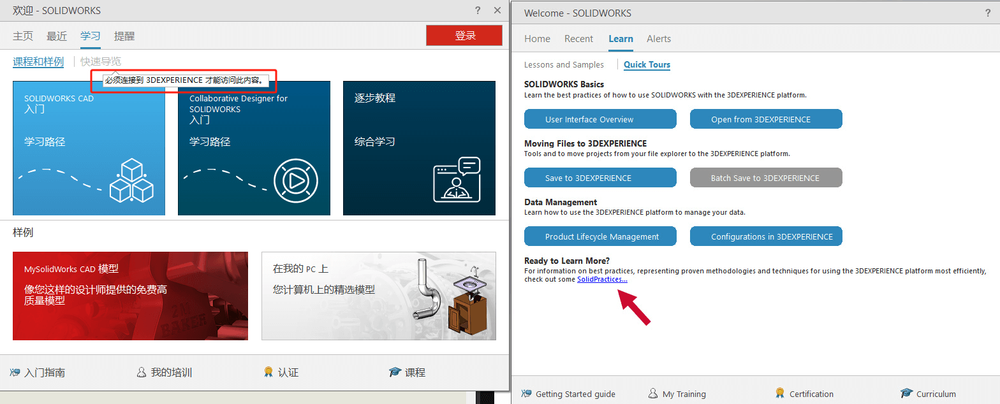提醒
软件界面
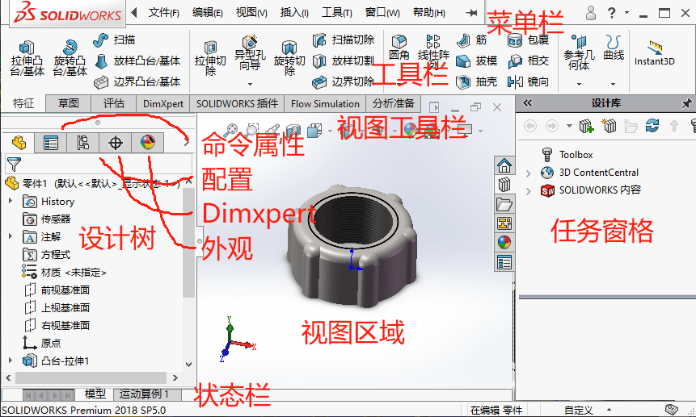软件设置
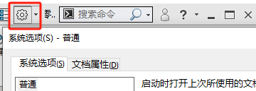系统属性：
在系统属性中的选项,一旦设置并保存后,将影响所有SOLIDWORKS文档
文件属性：
某些设置可以应用到每一个文件中,这些属性可随文件一起保存,并且不会因为文件在不同系统环境打开而变化
2草图
进入草图绘制
可以通过选择基准平面进行【草图绘制】、
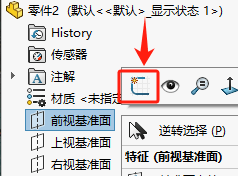草图实体：
草图实体包括：直线、圆等草图对象，并且你能在【草图绘制】模式下，对其进行剪裁、复制、等距草图等操作
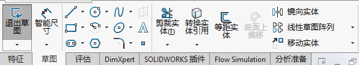让我们来绘制一个草图模型
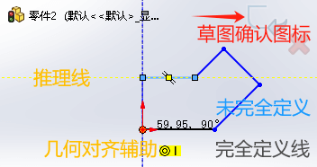几何尺寸：
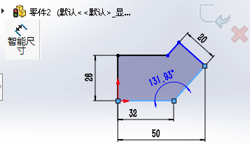几何关系：
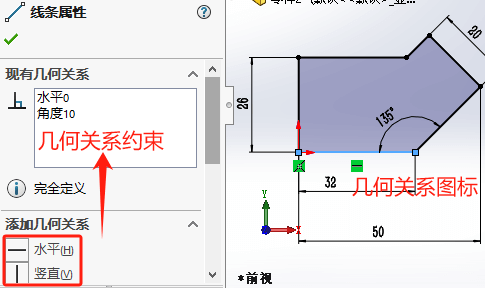3零件
特征
掌握【拉伸凸台】、【拉伸切除】、【异形孔向导】、【圆角】类型的特征
拉伸特征
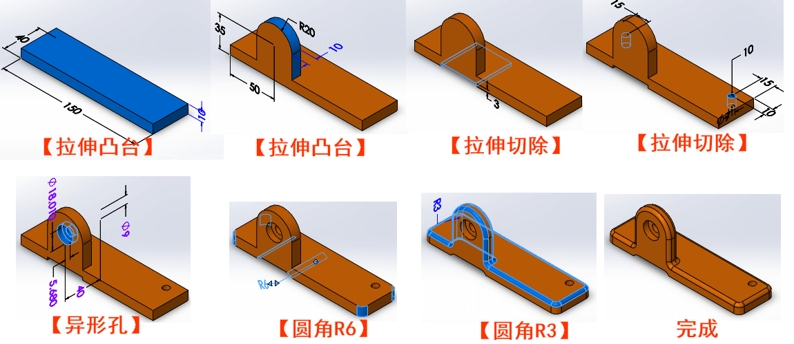特征条件
熟悉【拉伸凸台】、【拉伸切除】内其他类型的设置的效果（例如：结束条件、拔模角度等）
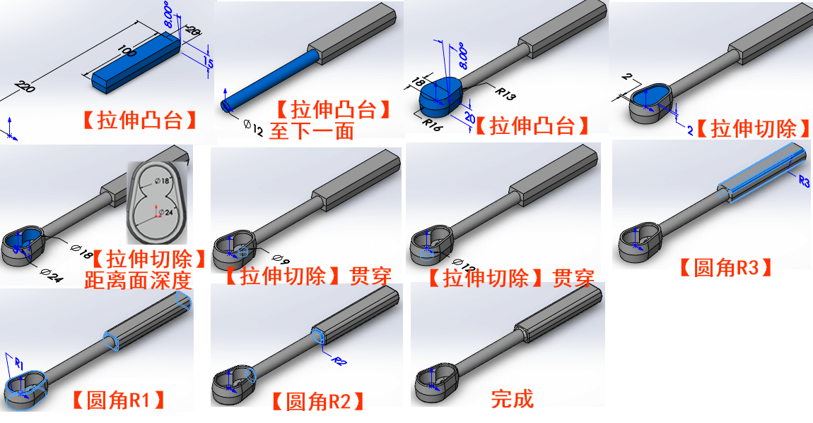阵列特征
零件3熟悉【阵列】特征
圆周阵列：
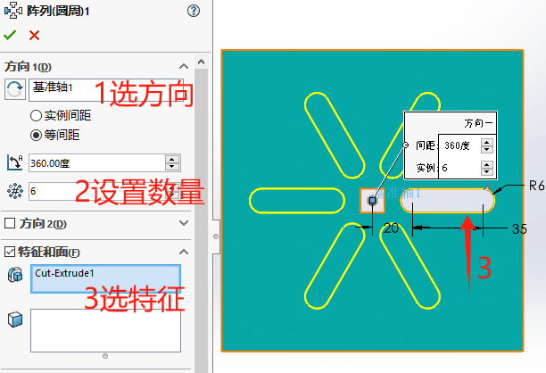线性阵列
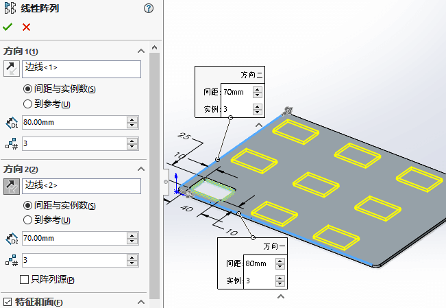2方向线性阵列：只阵列源对比
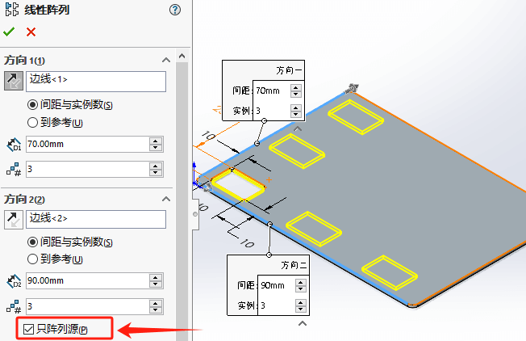草图阵列
扫描特征
零件4熟悉【扫描】特征
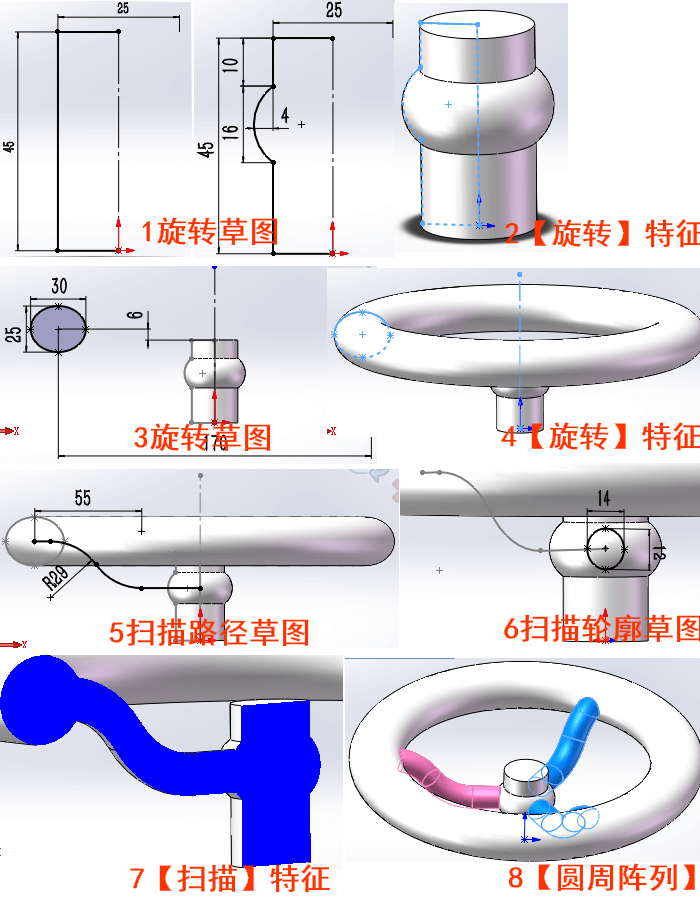抽壳特征
零件5熟悉【抽壳】特征
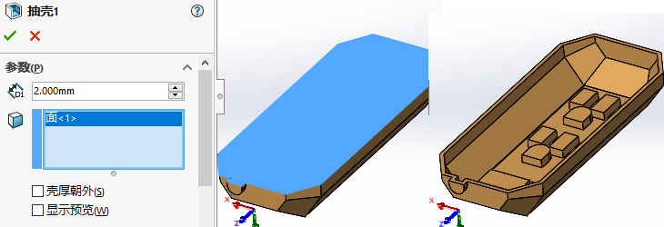 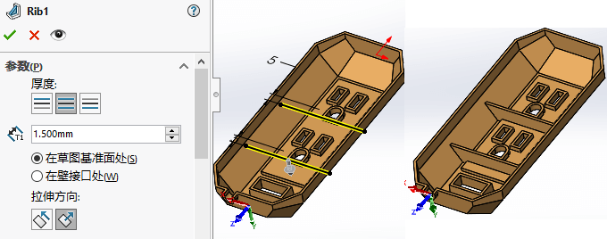筋特征
零件6熟悉【筋】特征，复杂筋草图的【筋】特征
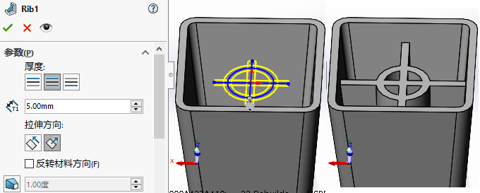4修复
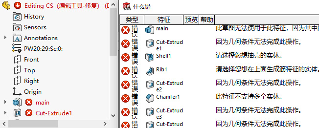检查草图
修复1：草图无法生成实体，端点被多个实体共享问题。
通过编辑草图使用【修改草图】工具，查出有3处草图问题
问题原因：草图拉伸特征需要封闭的轮廓草图，不可存在浮动的点或线，导致形成开环轮廓
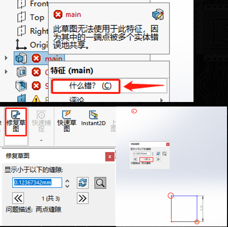几何错误
错误2：•不存在几何关系
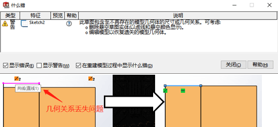草绘面丢失
错误3：•草图基准面已遗失
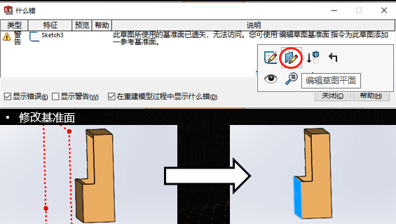尺寸错误
错误4：•不存在几何体尺寸

数值错误
错误5：圆角过大错误
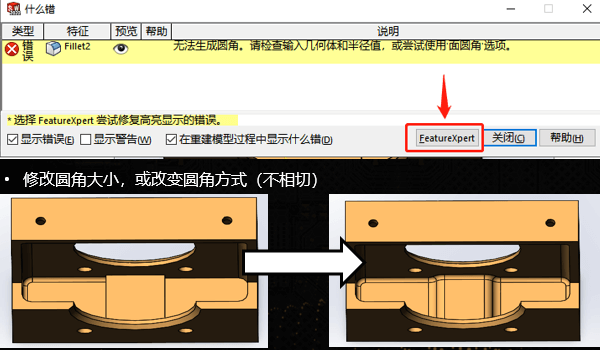5编辑
修改草图
设计更改要求：1、圆形凸台要与右边线相切
编辑过定义草图（尺寸出现过定义时可以借助SketchXpert方式进行自动诊断并给出解决方法）
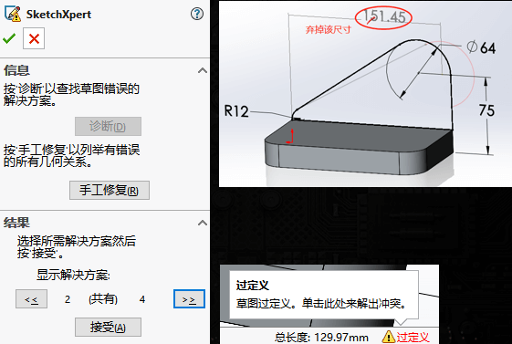设计更改要求：2、圆形凸台要位于肋的中央；3、肋的末端是半圆形
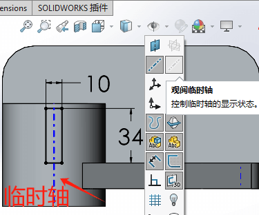修改特征
设计更改要求：•4、只有基座需要抽壳（重排特征排序处理）
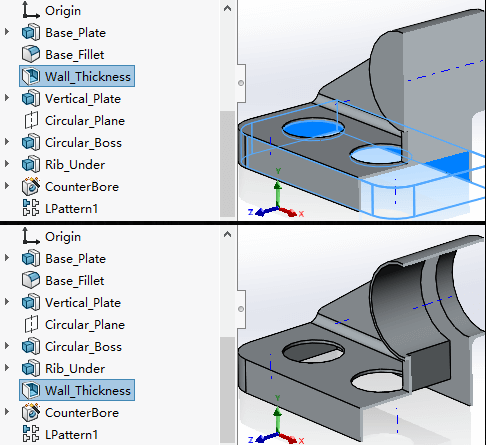6工程图
标题栏：利用草图线条约束表格样式，利用文字注解关联属性说明
图框：图纸图幅规格和图面划分
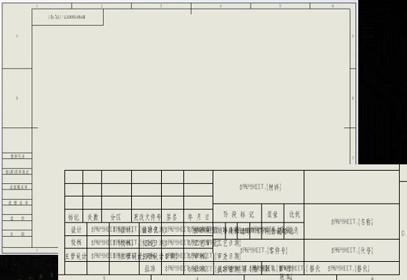文档属性：包括尺寸、字体、符号等属性样式的设置
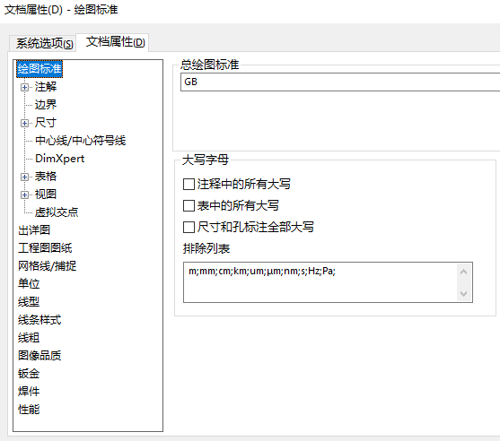视图
标准三视图：选择零部件生成标准三视图
模型视图：浏览模型放置一个模型视
投影视图：根据所选的视图为基准，沿投影方向生成新的工程图视图
辅助视图：根据所选边线垂直方向生成工程图视图注解
剖面视图：利用切割线，剖切展示零部件内部结构
局部视图：局部放大视图
断开的剖视图：对于一些局部的需要观察内部的剖视细节图，这部分是生成在原有工程视图上的
断裂视图：对于长轴零件，可以断裂中间部分，缩短零件的展示长度（原尺寸长不变的）
剪裁视图：保留剪裁现有的工程视图的一部分
交替视图：利用零部件配置设置不同状态下的两个状态视图
注解
属性链接：链接文件属性、自定义属性、或指定配置属性的值到注释文字中。
一般关联格式为：【$PRPSHEET:{属性名}
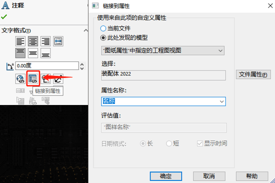7装配体
参考引用

配合
打包
8选修-配置
创建配置
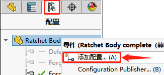 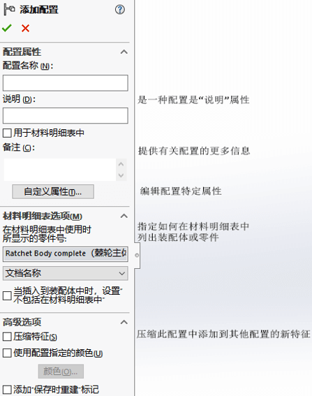设置配置
能设置配置的对象有很多，
例如：尺寸、
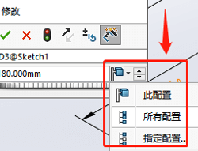例如：特征、零件压缩、
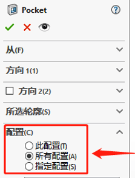配置特征
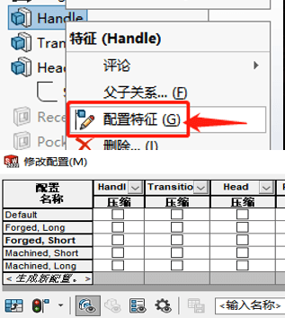设计表
配置参数化的一种工具，表内收集了该文件所有配置的不同尺寸、特征的不同配置
配置的其他用途
•特定的应用需求
﹘当为有限元分析之类的场合准备零件时，零件需要尽量简单。通过压缩不必要的一此细节特征(如圆角)，可以得到针对FEA的配置
•性能的考虑
﹘一些零件包含复杂几何特征，例如扫然和放样特征、变半径的圆角和多重厚度的抽壳，它们比或消耗系统的资源。用户可以定义一个压缩某些特征的配置，这会在进行模型的其他部分设计时，提高系统的性能。当用户进行压缩时，一定要考虑到父/子关系，压缩的特征不能被访问、使用或者参考，因此它们不能作为父特征。
•装配的考虑
﹘在设计包含大量零件的复杂装配体时，使用零件的简化表示将提高系统的性能。考虑压缩不必要的细节，例如圆角，只保留用于配合、干涉检查和定义配置与方程式所需的关键几何体。添加零部件到装配体时，可使用[插入]零部件]/[来自文件]。浏览器允许用户选择列出的零件的配置。为了更好地发挥作用，要求用户在创建零部件时就计划好配置定义并保存配置。
9选修-方程式
在【工具-方程式】启用该功能。并且在设计树里可以做编辑
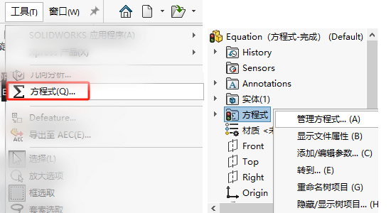 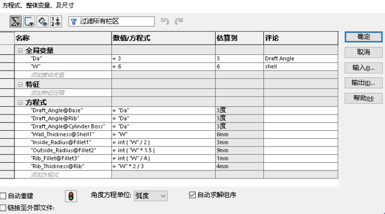全局变量
自定义一个变量，做后续参与方程式计算使用；
特征
针对特征压缩/解压缩操作；可以搭配if函数对特征进行判断压缩。格式如下：If(判断, “是”的结果,“否”的结果)
1 | If("D1@Sketch4">15, 20, 10) |
方程式
利用前面以及模型上尺寸的选择，进行等式计算，驱动结果。